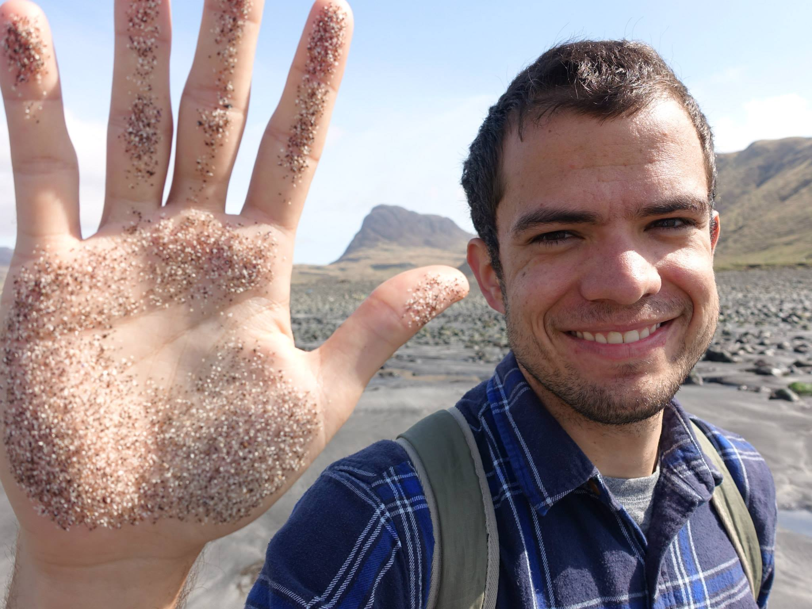
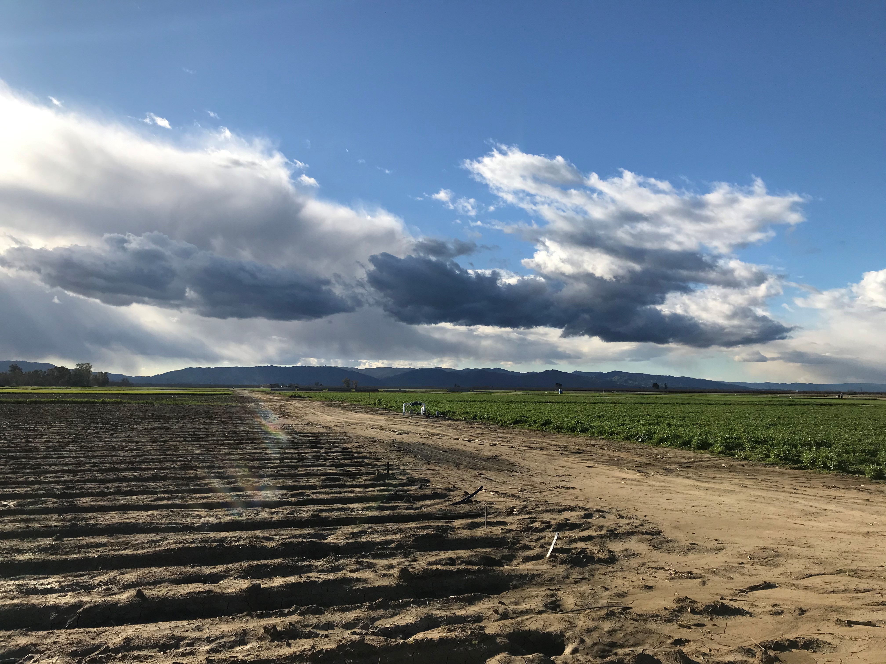

Daniel Rath
Ph.D. Candidate,
Scow Soil Microbial Ecology Lab
University of California, Davis
Soil Science, Sustainable Agriculture, Microbes, and Carbon Storage
I'm a Belizean born and raised PhD. candidate at UC Davis in the Scow Lab, studying how land management, microbes, nutrients, and soil carbon interact over decades. I did my B.A in Ecology and Evolution at Carleton College, and my M.Sc. in Soils and Sustainability with Dr. Bryan Griffiths at the University of Edinburgh/SRUC.
I am passionate about sustainable agriculture, soil microbes, and the interactions between land management and societies. My international work includes project management for Mana Organics Pvt. Ltd, and collaborations with the Yaax'che Conservation Trust and Environmental Research Institute in my home country of Belize.
You can view some of my published work here, and view some of the presentations and infographics I use in my outreach activities here. You can contact me at darath 'at' ucdavis 'dot' edu.

Subsoil carbon increases in the Russell Ranch Long Term Experiment were driven primarily by an interaction between cover crop root channels, and compost-driven inputs of mobile C, N, P and S.
Soil Metagenomes in Long Term Systems

Metagenomic sequencing of 1m soil profiles from the Russell Ranch experiment show increased C processing, P cycling and "dark carbon" fixation under compost amendment.